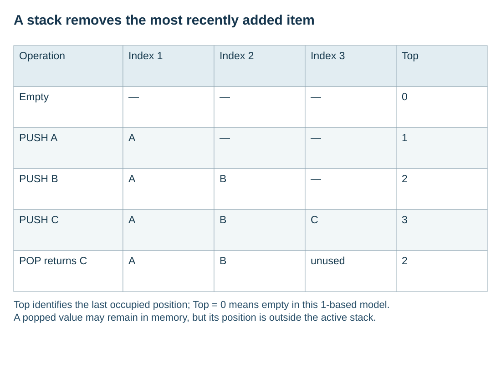

Use LIFO for nested or reversible work
S10.09.A01
Visual overview
A stack removes the most recently added item

Visual transcript
- Operation: Empty; Index 1: —; Index 2: —; Index 3: —; Top: 0.
- Operation: PUSH A; Index 1: A; Index 2: —; Index 3: —; Top: 1.
- Operation: PUSH B; Index 1: A; Index 2: B; Index 3: —; Top: 2.
- Operation: PUSH C; Index 1: A; Index 2: B; Index 3: C; Top: 3.
- Operation: POP returns C; Index 1: A; Index 2: B; Index 3: unused; Top: 2.
- Top identifies the last occupied position; Top = 0 means empty in this 1-based model.
- A popped value may remain in memory, but its position is outside the active stack.
Core explanation
A stack is a last-in, first-out structure. PUSH adds an item at the top; POP removes and returns the top item. A peek operation, if provided, reads the top item without removing it. Items below the top wait until the items above them have been removed.
Undo history and nested subroutine calls fit this access order. The latest action is undone first, and the most recent unfinished call returns before an earlier call resumes. Choose a stack because of that ordering requirement, rather than merely because the task stores several items.
Worked example · Follow an undo history
- Add actions
PUSH Insert; PUSH Bold; PUSH Delete.
- Undo twice
The two POP operations return Delete, then Bold.
- Remaining state
Insert remains at the top; a peek reads it without deleting it.